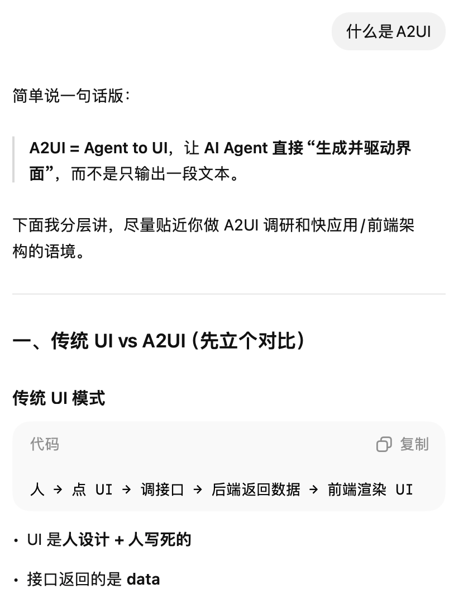
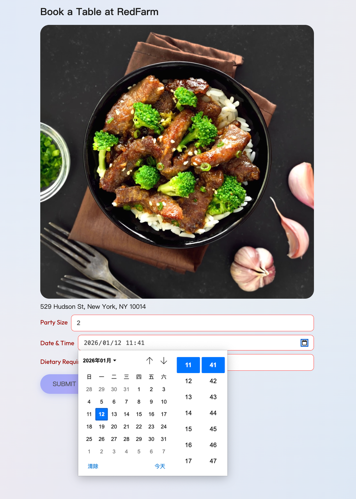
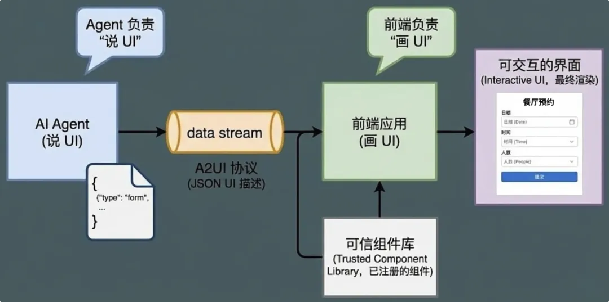
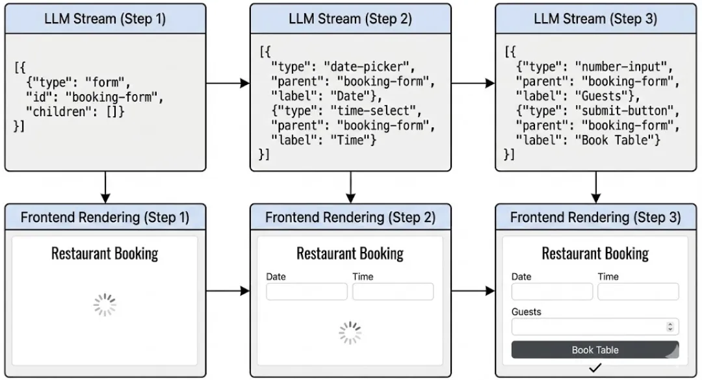
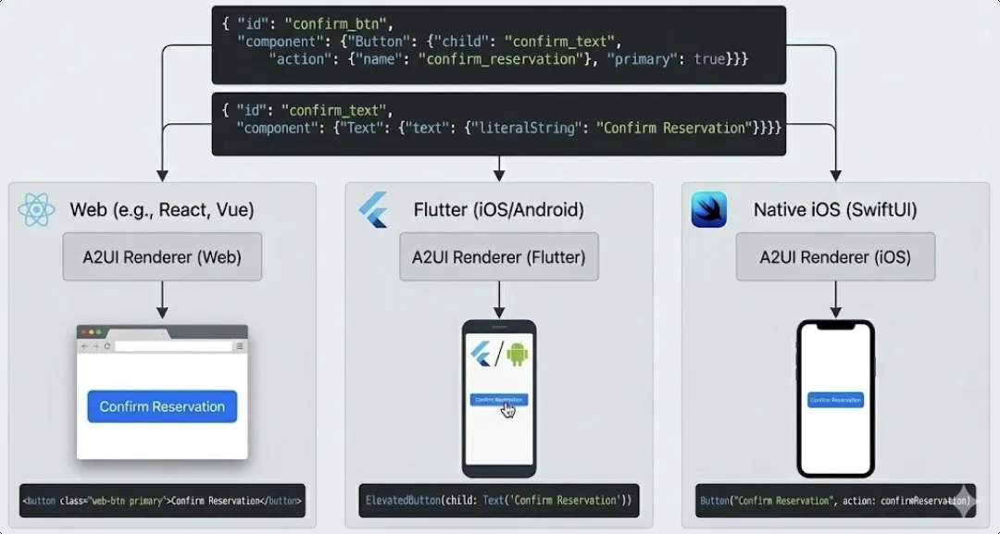
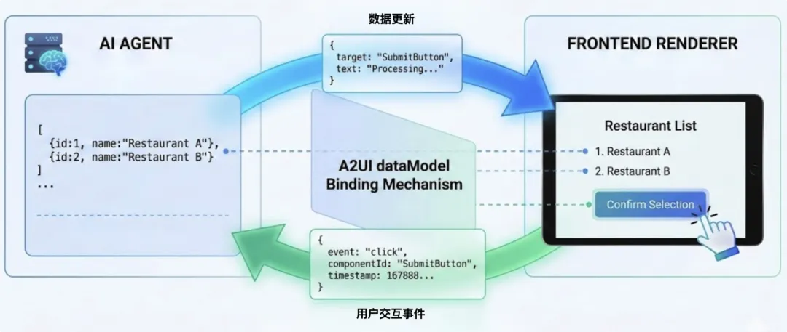
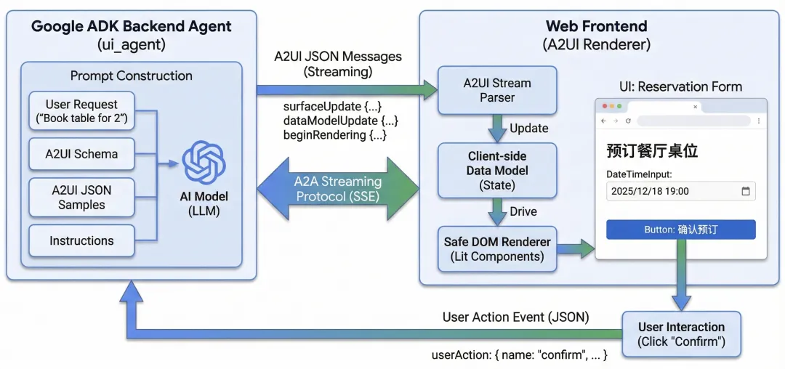
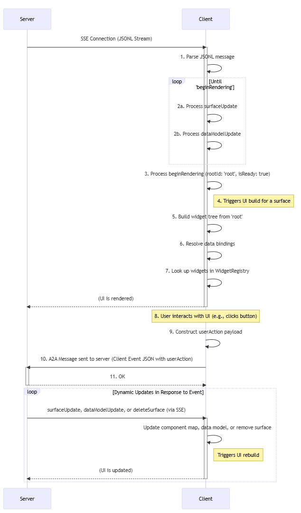

A2UI 协议与架构解析
什么是A2UI
A2UI（Agent-to-User Interface）是一种声明式 UI 协议，用于让 AI 代理生成界面结构和交互语义，通过 JSON 消息流发送给客户端，客户端根据自己的组件目录本地渲染。它是一个 协议，而不是 UI 框架。
传统 AI 聊天助手只能返回文本或危险的 HTML/JS 代码，而 A2UI 的目标是让 AI “说出界面” ，让客户端来渲染，而不是让模型嵌入不可信代码。
传统AgentUI：
文本形式：

支持A2UI的AgentUI：
有界面，可交互



A2UI协议的工作流程：

为什么要设计A2UI协议
A2UI 的设计初衷是解决传统 AI 界面生成方式的四大核心问题：
- 安全性： AI 生成 HTML/JS 存在注入攻击或 XSS 风险。A2UI 仅传递声明性 JSON，客户端控制执行环境，杜绝不可信代码执行。
- 跨平台渲染： A2UI 描述的 UI 是抽象的，不绑定任何前端框架。同一 JSON 可在 Web、Flutter、React、原生 iOS、Android 等平台渲染，实现“一次定义，多端呈现”。
- LLM 友好： AI 模型生成嵌套树结构的 JSON 难度高、易出错。A2UI 采用“扁平组件列表 + ID 互联引用的邻接表结构”，使模型可增量生成、错误修正更简单、支持流式输出（Streaming），降低生成难度。
- 渐进式响应体验： 客户端可在 LLM 生成过程中边接收边渲染，无需等待完整结果，提升用户感知响应速度。
核心设计思想
A2UI （Agent-to-User Interface）不是一个 UI 框架，而是一种协议规范 ，目标是让 AI 代理以声明式、结构化、可流式生成的 JSON 描述形式“说出 UI”，由客户端负责渲染真实界面。 这样可以解决传统 AI 文本 + HTML/JS 不安全、不一致以及跨平台难的问题。
声明式优先：以数据描述取代代码生成
UI 不是代码，而是 数据和结构 —— 通过 JSON 声明各种界面元素、层级关系、数据绑定与行为意图。
这样做的好处包括：无需执行来自代理的不受信任代码、可以借助客户端本地组件库渲染、避免 XSS/执行风险。
📌 核心思想：
“让代理输出什么 UI，而不是怎么渲染它”。
代理负责输出 UI 意图，客户端决定最终样式与实现方式。
对 LLM 友好（生成与流式兼容）
传统 UI JSON 树结构对于大模型而言很难生成且不易修正。A2UI 采用：
扁平组件列表 + ID 互联引用的邻接表结构
这种平面结构让大模型可以：
- 增量生成 而不是一次输出整个树
- 做错误修正与补充 更简单
- 支持流式输出（Streaming JSONL）
- 降低整体生成约束难度

📌 核心思想：
让模型逐步建立 UI 结构、边生成边渲染，而不是一次性输出完整、复杂的嵌套树。
框架无关（Platform-Agnostic）
协议层与任何前端框架解耦：
渲染实现可以是：Angular / Flutter / Web Components / React / SwiftUI
📌 核心思想：
一个 UI 描述、多平台呈现

关注点分离（Separation of Concerns）
A2UI 明确把 UI 结构、应用状态、渲染实现分离，形成三层逻辑：
- UI 意图层（AI 产出）
表示用户界面应该是什么，包括组件、结构、数据绑定。 - 应用状态层（Data Model）
与 UI 分离，组件通过路径绑定到状态以响应变化。 - 渲染执行层（客户端实现）
本地组件库负责样式、交互细节与行为绑定。

这样设计的核心好处是：
- 易于做数据驱动响应
- 客户端控制样式与安全边界
- Agent 不需要关心具体实现细节
📌 核心思想：
“AI 决定 什么，客户端负责 怎么呈现”。
A2UI架构流程
整体架构
A2UI 的核心思想是 Agent “说出 UI”，客户端渲染界面并处理交互。整个流程可以拆成以下步骤：
- 客户端把请求传给AI Agent
- Agent 根据上下文、意图和数据，生成声明式 UI 描述（JSON）
- 客户端接收 A2UI JSON，渲染成可操作界面
- 用户触发atcion，客户端发送给Agent，Agent 基于用户操作动态更新界面

数据流交互流程
A2UI协议由服务器到客户端的数据流组成，该数据流描述了用户界面以及发送到服务器的各个事件。客户端接收该数据流，构建用户界面并进行渲染。通信通过JSON Lines (JSONL)数据流进行，通常通过服务器发送事件(SSE)传输。

- 服务器流： 服务器开始通过 SSE 连接发送 JSONL 流。
- 客户端缓冲： 客户端接收消息并将其缓冲：
- surfaceUpdate组件定义存储在一个文件中Map<String, Component>，并按类型进行组织surfaceId。如果表面不存在，则会创建它。
- dataModelUpdate客户端内部 JSON 数据模型已构建或更新。
- 渲染信号： 服务器发送一条beginRendering包含root组件 ID 的消息。这可以防止“不完整内容闪烁”。客户端会缓存传入的组件和数据，但在尝试首次渲染之前会等待此显式信号，从而确保初始视图的完整性。
- 客户端渲染： 客户端现在处于“就绪”状态，从root组件开始。它通过在缓冲区中查找组件 ID 来递归遍历组件树。它解析与数据模型的所有数据绑定，并使用该数据WidgetRegistry实例化原生控件。
- 用户交互和事件处理： 用户与已渲染的组件进行交互（例如，点击按钮）。客户端构建一个userActionJSON 有效负载，解析组件中的所有数据绑定action.context。它通过 A2A 消息将此有效负载发送到服务器。
- 动态更新： 服务器处理请求userAction。如果 UI 需要响应更改，服务器会通过原始 SSE 流发送新的surfaceUpdate消息dataModelUpdate。客户端收到这些消息后，会更新其组件缓冲区和数据模型，UI 也会重新渲染以反映这些更改。服务器还可以发送消息deleteSurface来移除 UI 区域。
A2A MCP A2UI 协议对比
这三个协议共同构成了 AI 智能体（Agent）生态系统的完整链路，处于不同的层级，解决的是完全不同的问题。
| 协议 | 全称 | 主要功能 | 核心对象 | 解决的问题 |
|---|---|---|---|---|
| MCP | Model Context Protocol | 连接工具 | 资源 (Resources) / 工具 (Tools) | Agent 如何读取本地文件、数据库或调用 API。 |
| A2A | Agent-to-Agent | 连接 Agent | 任务 (Tasks) / 状态 (States) | 不同厂商的 Agent 之间如何互相分工、派活和同步进度。 |
| A2UI | Agent-to-UI | 连接用户 | 组件 (Components) / 模板 (Templates) | Agent 如何在对话框里生成图表、表单或按钮等交互界面。 |
我们可以用一个“团队”的例子来快速理解它们：
- MCP (能力层)： 像是给每个员工配备的“工具箱”。
- A2A (协作层)： 像是团队成员之间的“通话协议”。
- A2UI (表现层)： 像是智能体发给客户的“交互说明书”。
协作场景
想象一下，你对“个人助理 Agent”说：“帮我分析下公司的财务报表，并订一张去上海的机票。”
- 内部调用 (MCP)： 你的助理 Agent 通过MCP 协议 连接到公司的数据库，获取原始的 Excel 财务数据。
- 外部委托 (A2A)： 助理 Agent 发现自己不会订机票，于是通过A2A 协议 找到了一家在线旅游平台的“订票 Agent”。它把任务派发出去，并实时跟踪订票状态（已提交 -> 处理中）。
- 结果展示 (A2UI)： “订票 Agent”选好了几张机票，它没有发一大段文字，而是通过A2UI 协议 在你的对话框里直接弹出了一个“机票对比卡片” ，让你点击按钮直接选购。
A2A vs MCP： 如果你想让两个 AI 机器人一起干活，用A2A ；如果你想给一个 AI 机器人喂数据或接插件，用MCP 。
A2UI 的特殊性： 它往往“跑”在 A2A 之上。当两个 Agent 协作时，其中一个可以把 UI 片段通过 A2A 传给另一个，最终由前端渲染出来。
 微信
微信 支付宝
支付宝